Grade 6
2969 no-prep resources for grade 6 with answer keys: reading comprehension passages, reading trails, and math centers.
2,969 resources
Subject

Bell Making Reading Comprehension Passages | Music Scavenger Hunt 5-6

Lunar New Year Reading Comprehension Passages | Winter Scavenger Hunt 5-6
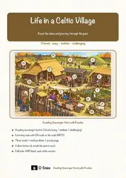
Celtic Village Reading Comprehension Passages | History Scavenger Hunt 5-6

Dog Reading Comprehension Passages | Biology Scavenger Hunt 5-6

Free Time Reading Comprehension Passages | Life Skills Scavenger Hunt 5-6

Earthquakes Reading Comprehension Passages | Earth Science Scavenger Hunt 5-6

Solar System Reading Comprehension Passages | Reading Scavenger Hunt 5-6

Hedgehog Reading Comprehension Passages | Science Scavenger Hunt 5-6
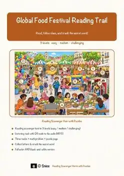
Global Food Festival Reading Comprehension Passages | Reading Scavenger Hunt 5-6
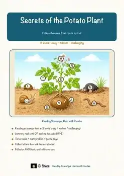
Potato Plant Reading Comprehension Passages | Science Scavenger Hunt 5-6

Water Reading Comprehension Passages | Science Scavenger Hunt 5-6

Light & Shadow Reading Comprehension Passages | Physics Scavenger Hunt 5-6

Air Reading Comprehension Passages | Science Scavenger Hunt 5-6
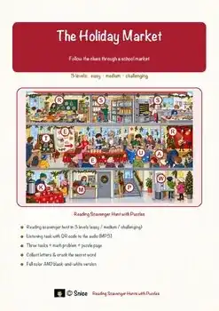
Holiday Market Reading Comprehension Passages | Economics Scavenger Hunt 5-6

Food Pyramid Reading Comprehension Passages | Health Scavenger Hunt 5-6

Family Life Reading Comprehension Passages | Life Skills Scavenger Hunt 5-6
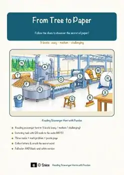
Paper Making Reading Comprehension Passages | Science Scavenger Hunt 5-6

Fish Anatomy Reading Comprehension Passages | Science Scavenger Hunt 5-6

Mushroom Reading Comprehension Passages | Science Scavenger Hunt 5-6
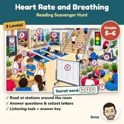
Heart Rate Reading Comprehension Passages | Health & PE Scavenger Hunt 5-6
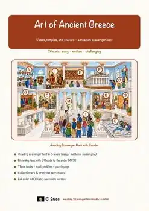
Ancient Greece Reading Scavenger Hunt | Greek Art & Architecture Escape Activity
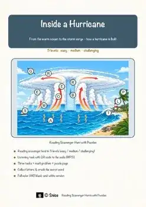
Hurricanes Reading Scavenger Hunt | Weather Science Escape Activity 5th 6th

Vertebrates Reading Scavenger Hunt | Animal Groups Science Escape Activity
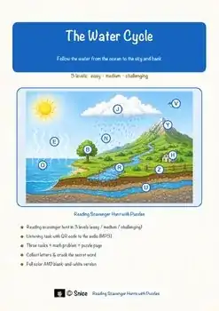
Water Cycle Reading Scavenger Hunt | Earth Science Escape Activity 5th 6th
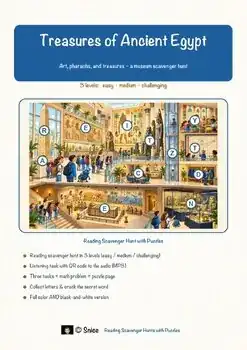
Ancient Egypt Reading Scavenger Hunt | Egyptian Art & History Escape Activity
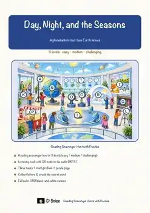
Day and Night & Seasons Reading Scavenger Hunt | Earth Science Escape Activity

Musical Instruments Reading Comprehension BUNDLE | Orchestra & Piano

Space Exploration Reading Comprehension BUNDLE | Apollo 11 & Rockets

Arctic Animals Reading Comprehension BUNDLE | Polar Bears & Huskies

Winter Reading Comprehension BUNDLE | Snow, Winter Sports & New Year

Spring Holidays Reading Comprehension BUNDLE | Easter, Passover & Eid

Earth Science Reading Comprehension BUNDLE | Rocks, Minerals & Climate

Prehistory Reading Comprehension BUNDLE | Stone Age to Bronze Age

Art History Reading Comprehension BUNDLE | Renaissance, Impressionism
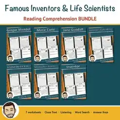
Famous Inventors Reading Comprehension BUNDLE | Cloze & Word Search
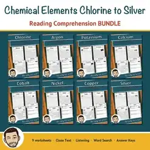
Chemical Elements Reading Comprehension BUNDLE | Chlorine to Silver
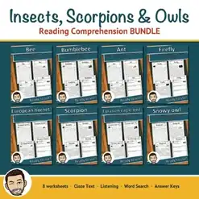
Insects & Owls Reading Comprehension BUNDLE | Cloze & Word Search
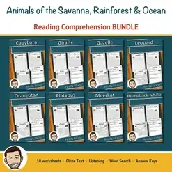
Savanna, Rainforest & Ocean Animals Reading Comprehension BUNDLE
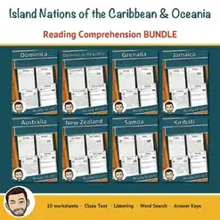
Caribbean & Oceania Countries Reading Comprehension BUNDLE | Cloze
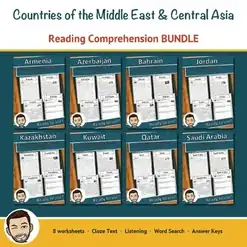
Middle East & Central Asia Reading Comprehension BUNDLE | Cloze & Word Search
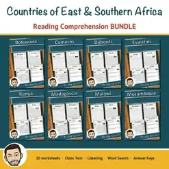
East & Southern Africa Reading Comprehension BUNDLE | Cloze & Word Search
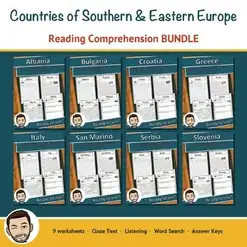
Southern & Eastern Europe Reading Comprehension BUNDLE | Cloze & Word Search

Citizenship Worksheets Bundle | Grades 5-8 | Constitution & Democracy Reading

Fall Animals Worksheets Bundle | Grades 5-8 | How Wildlife Prepares for Winter
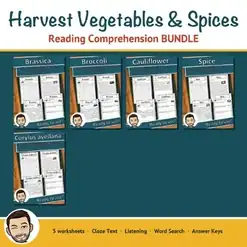
Harvest Vegetables Worksheets Bundle | Grades 5-8 | Fall Reading Passages
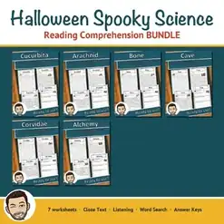
Halloween Science Worksheets Bundle | Grades 5-8 | Bats, Spiders & Bones

Veterans Day Worksheets Bundle | Grades 5-8 | November Reading Comprehension
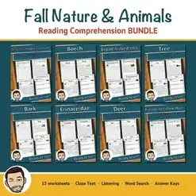
Fall Worksheets Bundle | Grades 5-8 | Autumn Trees & Animals Reading Passages
No resources found – try a different search term or filter.